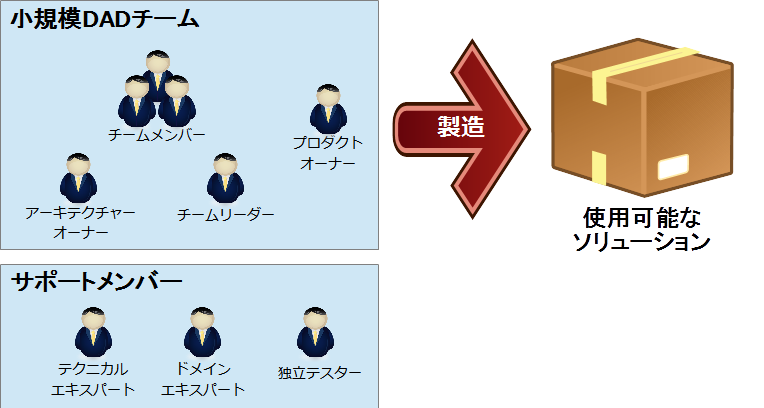
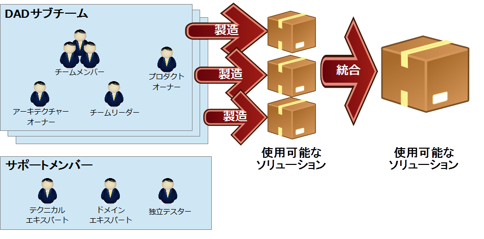
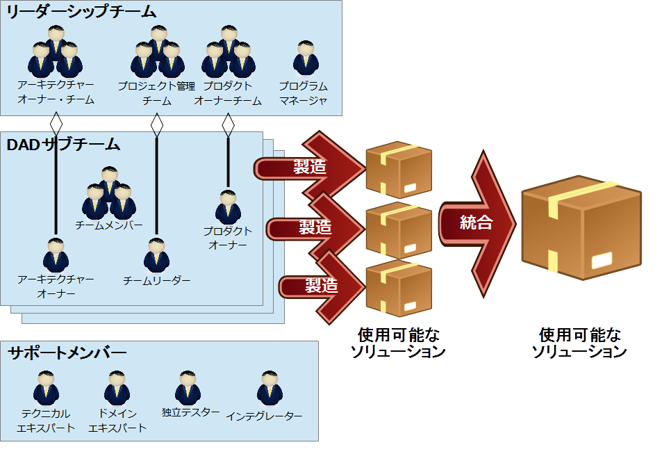
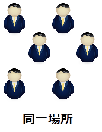
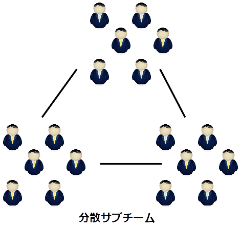
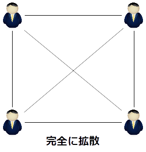
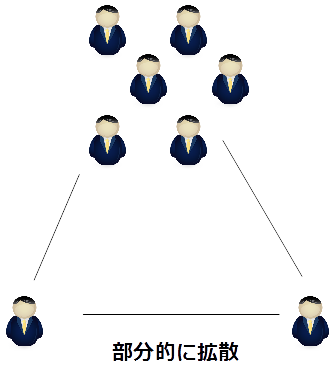

�
»
»
DADチーム
DAD概要
DADチーム
基本的戦略
- 少人数
- チーム分けする
- サブチームは無理にDADチームにしない
- チーム数が多くなったら、チームをまとめるチームをつくる
チーム組織化戦略
小規模DADチーム
小規模DADチーム(2～15名)は、下図の様な構造が典型的です。
小規模DADチームでは、プロダクトオーナーが１名、チームリーダーが１名、アーキテクチャオーナーが1名、チームメンバーが１名から10名程度の構造になります。小規模DADチームでは、プロダクトオーナーが居なかったり、チームリーダとアーキテクチャオーナーが同じ人になったり、とすることがあります。
また、DADチームをサポートするメンバーもチームメンバーとして含まれます。

中規模DADチーム
中規模DADチーム(10～40名)は、下図の様な構成が典型的です。
複数のサブチーム（小規模DADチーム）で構成されており、サポートメンバーが適宜、複数のサブチームを支援します。

中規模DADチームは複数のサブチームから構成されるため、サブチーム間のコミュニケーションが問題になる事があります。このため、サブチームの数は２、３チームまでにしておくことが現実的なチーム構成になります。
ほかに、コミュニケーションを効率化するために以下の様な事を検討します。
- 方向付けフェーズでの構想とリリース計画作りに掛ける工数を増やす。
- サブチーム間の日時調整ミーティングを行う。
- 電子ツール（email、チャット、ワークアイテム管理機能）などを使い、チーム間のコミュニケーションを取りやすくする。
大規模DADチーム
大規模DADチーム(30人以上)は下図の様な構成が典型的です。
大規模DADチームは、中規模DADチームと同じように複数のサブチームの集まりとして構成されます。大規模DADチームが中規模DADチームと異なるのは、「リーダーシップチーム」と「サポートメンバーのインテグレータ」の存在です。
リーダーシップチームは、各サブチームのアーキテクチャオーナーや、チームリーダー、プロダクトオーナーで構成されるチームで、チーム全体の調整を行うチームとなります。
プログラムマネージャが、リーダーシップチームのリーダーとなります。
インテグレータは、各サブチームが構築したソリューションを統合する役割です。サブチーム数が少ない場合には、「インテグレータ」の役割をサブチームのメンバーが行うことがありますが、サブチームが多くなった場合には別途「インテグレータ」の役割を担うメンバーを確保します。

リーダーシップチームは、主に以下の様な作業を担う必要があります。
- プロジェクト管理面の調整
- 要求の調整
- 技術的な調整
サブチームを組織するための戦略
大規模DADチームや、中規模DADチームを構成するサブチームを組織する際には、「フィーチャーチーム」「コンポーネントチーム」「社内オープンソース」と３つの基本的戦略が考えられます。
フィーチャーチーム
- 概要
-
サブシステム全体を通して、一気通貫の機能を構築する責務を持つように組織されるチームです。一時期に複数のフィーチャーチームと同じソースを並行作業することが発生します。
- メリット
-
- デメリット
-
- 洗練されたソフトウェア構成管理(SCM)が必要。
- 洗練されたシステムレベルの統合とリグレッションテストが必要。
- 考慮点
-
- プロダクトオーナーがソリューションの小さな機能の塊を”垂直”で定義できる場合に有効。
- プロダクトオーナーが要求間の依存関係を管理出来るべき。
コンポーネントチーム
- 概要
-
ソリューション全体の中の１つ以上のコンポーネントの構築に責務を持つ特定のチームです。コンポーネントチームは、コンポーネントの構築に責務を持つため、一時期に複数のチームが同じコンポーネントに対して並行作業することはありません。
- メリット
-
- コンポーネントは別のリリーススケジュールで開発されていくブラックボックスとして扱われる。
- 開発チームでのコンポーネント再利用の可能性が向上し得る。
- デメリット
-
- 疎結合で高凝集度の綺麗なアーキテクチャを必要とする。
- コンポーネントとインターフェースの識別の前にアーキテクチャーを具体化する必要がある。
- コンポーネントチームは実装されていない機能のモックを作る必要があるかもしれない。モックが実際の機能で置き換えられるまではコンポーネントは出荷可能ではない。
- テクニカルコンポーネントをデモするのは難しい。
- チームが利害関係者より技術にフォーカスしがちになる。
- 考慮点
-
- プロダクトオーナーがソリューションを”水平”軸で定義できる場合に利用できる。
- コンポーネントの技術的な依存関係を管理できる有能なアーキテクチャーオナーが必要。
- 組織内でアーキテクチャー指向の文化が根付いているべき。
社内オープンソース
- 概要
-
コンポーネントが、多くのチームにとって有効である場合に取られうる戦略です。多くのチームにとって有効なコンポーネントには、フレームワークやユーティリティーなどが考えられます。
- メリット
-
- 多くのチームにとって有効なコンポーネントを、チームをまたがって協働開発することが可能になります。
-
- デメリット
-
- 開発工数の投資がなされないケースが多い。
- オーナーシップや保守に関する課題について明確にする必要がある。
- 考慮点
-
- すでにオープンソースの文化が組織に根付いている場合には有効。
- 複数チームで必要なコンポーネントを識別できるなら良い戦略となる。
- コンポーネントチームが望ましくない場合に有効
地理的条件
同一場所
|

|
DADチームにとって一番理想的な地理的条件。
チームメンバーが、同じ部屋、同じフロア、同じ建物の中で作業を行っている状況。
チームメンバー間のコミュニケーションが口頭で行える。
小規模DADチームでは、同一場所で作業が行えるように調整を行うべきです。
|
分散サブチーム
|

|
中規模DADチームや大規模DADチームであり得る地理的条件。
サブチームは同一場所で作業を行えているが、それぞれのサブチームが異なる場所で作業を行っている状況。
サブチーム間の情報交換を定期的に行うことが出来る仕組みを構築する必要があります。
また、電子ツールなどを使うなどしてサブチーム間のコミュニケーションが円滑に行えるようにようにする必要があります。
|
完全に拡散
|

|
各個人ごとに異なる場所で作業を行う様な地理的条件。
避けるべき状況であるが、社内オープンソースに戦略を適用した場合には適用することもできる。
電子ツール（メールやチャットなど）を使ったコミュニケーションを円滑に行えるような仕組みを構築することが必須。
|
部分的に拡散
|

|
DADチームの一部のメンバーが、異なる場所で作業せざる得ない状況。
サポートメンバーが拡散している状況であれば、定期的な打ち合わせの場を確保するなどの対処が必要。
DADチームのチームメンバーが拡散している場合は、同一場所で作業を行えるようにできないか調整を取るべきです。
|
.png){kind=link}
.png){kind=link}
.png){kind=link}
{kind=link}
{kind=link}
{kind=link}
{kind=link}